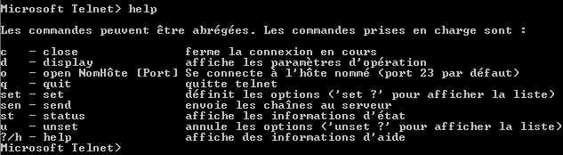

telnet, qu'on peut trouver sur la plupart des plates-formes (Windows, Linux, unix...), n'est en fait qu'un petit programme faisant office de terminal, et reposant sur le protocole TELNET. Autant dire que le nom n'a pas été très dur à trouver... c'est comme si on donnait le nom "http" à Internet Explorer.
Dans cet article, vous trouverez une courte description du protocole TELNET, quelques options de configuration sous Windows du client, ainsi que des exemples d'exploitation que vous pourrez réaliser tout en vous amusant. On ne traitera pas ici du serveur Telnet.
Je vous laisse le soin d'approfondir chacune des parties, ma méthode ici étant de vous montrer directement des cas concrets.
Avant de commencer, voyez la célèbre vidéo Star Wars par Telnet, en tapant dans votre menu 'démarrer' -> 'Exécuter' -> telnet towel.blinkenlights.nl.
Ce protocole n'a pour unique but que de faire émuler un terminal, permettant ainsi d'ouvrir des sessions sur un hôte distant (un serveur, un routeur...).
Cette couche se situe bien au dessus de la couche TCP qui est de niveau 4 (transport) : c'est la couche dite applicative niveau 7. Voici une image en anglais montrant les layers (couches) provenant du site Loyola University Chicago :
TELNET est un protocole articulé sur la couche TCP, qui fournit un contrôle de flux à votre connexion. Le service Telnet (le serveur) par défaut écoute sur le port 23.
Bien ! Maintenant, je vais vous guider pas à pas à travers quelques exemples de manipulation. Mais avant de commencer, voici quelques options bonnes à connaître.
Tout d'abord on lance telnet : menu 'démarrer' - 'Exécuter' - telnet, puis validez.
Vous êtes ici en mode prompt
Bien. On regarde maintenant la liste des options : tapez help dans la console, puis validez. Une liste d'options apparaît alors, avec une aide relativement "parlante" : je vous épargnerai donc le commentaire de chacune de ces options ;) .

Une option parfois utile est de voir ce que l'on tape. Cela s'appelle le localecho. Pour l'activer, utilisez la commande set, et pour le désactiver, la commande unset.
La pratique avec le port SMTP
Rappel : le port SMTP (25) permet l'envoi de mails. But : cela vous expliquera comment envoyer un mail avec telnet. Note : vous remplacerez 'smtp.fai.fr' par le smtp de votre fournisseur d'accès. Vous validerez à la fin de chaque ligne. Certains SMTP sont (trop?) protégés et ne permettent pas cette manipulation. Vous respecterez la casse (différenciation majuscule / minuscule) et les espaces.
- Lancez telnet. - Mettez le localecho : set localecho. - On ouvre la connexion : open smtp.fai.fr 25. - Il reste plus qu'à initialiser l'échange : HELO fai.fr. - On indique l'expéditeur : MAIL FROM: [email protected] - On indique le destinataire : RCPT TO: [email protected] - On commence le message en passant en mode donné : DATA. - On met un sujet : Subject: M@teo21 prend des vacances. - Un simple 'ENTRER' pour passer à la ligne suivante qui correspondra alors au corps du mail. Eh oui, cela devait arriver, M@teo21 mange beaucoup trop de pizzas. - Pour envoyer ce mail, sautez alors une ligne, puis mettez un point ; validez. Exemple en image :
Le mail est parti... Enfin, pas vraiment celui de l'image : l'expéditeur comme le destinataire n'existent pas. ;)
La pratique avec le port FTP
Rappel : le port FTP (21) permet le transfert de fichiers. But : cela vous expliquera comment s'authentifier à un serveur FTP. Note : essayez les commandes suivantes une fois authentifié : PUT, PASV, GET, CLOSE, LIST, SYST, PWD. Selon la nature du ftp, la commande HELP ou HLP peut être disponible.
- Lancez telnet. - Mettez le localecho : set localecho. - On ouvre la connexion : open ton.ftp.fr 21. - On dit qui on est : USER toto. - On donne alors le mot de passe : PASS monMotdePasse. - On se met en mode passif : PASV. - On demande les commandes disponibles : HELP. - On affiche le chemin courant : PWD. - On ferme la connexion : QUIT.
La pratique avec IRC
Rappel : le port IRC (6667-7000) permet de dialoguer en temps réel. But : cela vous expliquera comment utiliser telnet en tant que client IRC. Note : les commandes commencent toujours par un mot clé en MAJUSCULES. Si vous ne faites rien au bout d'un certain temps d'inactivité, le serveur vous envoie une requête de type PING : il faudra alors répondre par un PONG, sinon il finira par vous déconnecter (Connection Timed Out). Vous trouverez un exemple de requête dans la manipulation ci-dessous détaillée. On se connectera ici au serveur fr.quakenet.org sur le canal #canal.
Le début - Lancez telnet. - Mettez le localecho : set localecho. - On ouvre la connexion : open fr.quakenet.org 6667. - On déclare son pseudo : NICK TonPseudo. - Nom d'utilisateur, hôte, nom serveur, nom réel: USER TonPseudo 0 * :Ton vrai prenom. Généralement, à cette étape il ne reste plus qu'à répondre à une requête PING que le serveur vous a envoyée (normalement) en utilisant la commande PONG :<le numero>. Vous avez alors établi la communication.
Ci-dessous, je me connecte au serveur fr.quakenet.org, rejoins #canal, parle un peu, demande aux gens de faire quelques requêtes CTCP (Client To Client Protocol), puis je parle à Winzou en privé. En bleu : ce que j'envoie ou saisis. En rouge : ce que le serveur m'envoie. En noir : un commentaire ou l'invite.
Microsoft telnet> open fr.quakenet.org 6667 NOTICE AUTH :*** Looking up your hostname NOTICE AUTH :*** Found your hostname, cached NOTICE AUTH :*** Checking Ident NICK BURSTER42 NOTICE AUTH :*** No ident response PING :287237928 USER BURSTER 0 * : Rootz me PONG :287237928 :euroserv.fr.quakenet.org 001 BURSTER42 :Welcome to the QuakeNetIRC Network, BURSTER42 :euroserv.fr.quakenet.org 002 BURSTER42 :Your host is euroserv.fr.quakenet.org,running version u2.10.11.07+asuka(1.2.1) :euroserv.fr.quakenet.org 003 BURSTER42 :This server was created Sun Feb 20 2005 at 22:26:53 CET :euroserv.fr.quakenet.org 004 BURSTER42 euroserv.fr.quakenet.org u2.10.11.07+asuka(1.2.1) dioswkgxXInR biklmnopstvrDcCNu bklov :euroserv.fr.quakenet.org 005 BURSTER42 WHOX WALLCHOPS WALLVOICES USERIP CPRIVMSG CNOTICE SILENCE=15 MODES=6 MAXCHANNELS=20 MAXBANS=45 NICKLEN=15 MAXNICKLEN=15:are supported by this server :euroserv.fr.quakenet.org 005 BURSTER42 TOPICLEN=250 AWAYLEN=160 KICKLEN=250 CHANTYPES=#&amp;amp; PREFIX=(ov)@+ CHANMODES=b,k,l,imnpstrDdcCNu CASEMAPPING=rfc1459 NETWORK=QuakeNet :are supported by this server :euroserv.fr.quakenet.org 251 BURSTER42 :There are 103 users and 168316 invisible on 38 servers :euroserv.fr.quakenet.org 252 BURSTER42 75 :operator(s) online :euroserv.fr.quakenet.org 253 BURSTER42 6 :unknown connection(s) :euroserv.fr.quakenet.org 254 BURSTER42 197018 :channels formed :euroserv.fr.quakenet.org 255 BURSTER42 :I have 2815 clients and 1 servers :euroserv.fr.quakenet.org NOTICE BURSTER42 :Highest connection count: 3511 (3510 clients) :euroserv.fr.quakenet.org 375 BURSTER42 :- euroserv.fr.quakenet.org Message of the Day - :euroserv.fr.quakenet.org 372 BURSTER42 :- 2004-7-14 19:25 :euroserv.fr.quakenet.org 372 BURSTER42 :- ......................................................................... :euroserv.fr.quakenet.org 372 BURSTER42 :- ... ... :euroserv.fr.quakenet.org 372 BURSTER42 :- ... You are connected to the QuakeNet IRC Network ... :euroserv.fr.quakenet.org 372 BURSTER42 :- ... via euroserv.fr.quakenet.org. ... :euroserv.fr.quakenet.org 372 BURSTER42 :- ... ... :euroserv.fr.quakenet.org 372 BURSTER42 :- ... For information about this server's host please visit ... :euroserv.fr.quakenet.org 372 BURSTER42 :- ... the websites below: ... :euroserv.fr.quakenet.org 372 BURSTER42 :- ... http://www.euroserv.com/ ... :euroserv.fr.quakenet.org 372 BURSTER42 :- ... ... :euroserv.fr.quakenet.org 372 BURSTER42 :- ... For information about this network please visit ... :euroserv.fr.quakenet.org 372 BURSTER42 :- ... the websites below: ... :euroserv.fr.quakenet.org 372 BURSTER42 :- ... http://www.quakenet.org/ ... :euroserv.fr.quakenet.org 372 BURSTER42 :- ... http://staff.quakenet.org/ ... :euroserv.fr.quakenet.org 372 BURSTER42 :- ... ... :euroserv.fr.quakenet.org 372 BURSTER42 :- ... This server accepts connections on the following ports: ... :euroserv.fr.quakenet.org 372 BURSTER42 :- ... 6665, 6666, 6667,6668, 6669 &amp;amp; 7000 ... :euroserv.fr.quakenet.org 372 BURSTER42 :- ... ... :euroserv.fr.quakenet.org 372 BURSTER42 :- ... By connecting to this network you give us permission to probe ... :euroserv.fr.quakenet.org 372 BURSTER42 :- ... your machine for open proxies/wingates. You also agree to adhere ... :euroserv.fr.quakenet.org 372 BURSTER42 :- ... by the following rules: ... :euroserv.fr.quakenet.org 372 BURSTER42 :- ... ... :euroserv.fr.quakenet.org 372 BURSTER42 :- ... o No flooding (including flood/clonebots). ... :euroserv.fr.quakenet.org 372 BURSTER42 :- ... o No distribution of copyrighted material or pornography. ... :euroserv.fr.quakenet.org 372 BURSTER42 :- ... o No multiplayer gaming cheat channels. ... :euroserv.fr.quakenet.org 372 BURSTER42 :- ... o No clones. http://www.quakenet.org/faq/faq.php?c=128 ... :euroserv.fr.quakenet.org 372 BURSTER42 :- ... o No channel takeovers. ... :euroserv.fr.quakenet.org 372 BURSTER42 :- ... o No attempts to disrupt network services. ... :euroserv.fr.quakenet.org 372 BURSTER42 :- ... o No racism and/or Nazism. ... :euroserv.fr.quakenet.org 372 BURSTER42 :- ... o No spamming and/or advertising. ... :euroserv.fr.quakenet.org 372 BURSTER42 :- ... o No hacking (including Virus/Trojan distribution). ... :euroserv.fr.quakenet.org 372 BURSTER42 :- ... o No actions we, the operators, regard as abuse. ... :euroserv.fr.quakenet.org 372 BURSTER42 :- ... ... :euroserv.fr.quakenet.org 372 BURSTER42 :- ... For more details of the network's terms of service ... :euroserv.fr.quakenet.org 372 BURSTER42 :- ... please visit the website below: ... :euroserv.fr.quakenet.org 372 BURSTER42 :- ... http://www.quakenet.org/rules/ ... :euroserv.fr.quakenet.org 372 BURSTER42 :- ... ... :euroserv.fr.quakenet.org 372 BURSTER42 :- ... Violation of the network'srules will result in kills ... :euroserv.fr.quakenet.org 372 BURSTER42 :- ... and possible network-wide access bans. ... :euroserv.fr.quakenet.org 372 BURSTER42 :- ... ... :euroserv.fr.quakenet.org 372 BURSTER42 :- ... o Server Admins: ... :euroserv.fr.quakenet.org 372 BURSTER42 :- ... Flusher [email protected] ... :euroserv.fr.quakenet.org 372 BURSTER42 :- ... o Operators: ... :euroserv.fr.quakenet.org 372 BURSTER42 :- ... beorn [email protected] ... :euroserv.fr.quakenet.org 372 BURSTER42 :- ... ... :euroserv.fr.quakenet.org 372 BURSTER42 :- ... Many common problems are explained on the website below: ... :euroserv.fr.quakenet.org 372 BURSTER42 :- ... http://www.quakenet.org/faq/ ... :euroserv.fr.quakenet.org 372 BURSTER42 :- ... If you have a general enquiry not answered by this website ... :euroserv.fr.quakenet.org 372 BURSTER42 :- ... please visit #help. If you *require* an IRC operator please ... :euroserv.fr.quakenet.org 372 BURSTER42 :- ... visit #feds. If you have trouble getting connected we can ... :euroserv.fr.quakenet.org 372 BURSTER42 :- ... be contacted via email at [email protected] ... :euroserv.fr.quakenet.org 372 BURSTER42 :- ... ... :euroserv.fr.quakenet.org 372 BURSTER42 :- ... The use of this server &amp;amp; network is a priviledge, not a right. ... :euroserv.fr.quakenet.org 372 BURSTER42 :- ... The network operators may deny network access to anyone, ... :euroserv.fr.quakenet.org 372 BURSTER42 :- ... for any reason, at their sole discretion. ... :euroserv.fr.quakenet.org 372 BURSTER42 :- ... ... :euroserv.fr.quakenet.org 372 BURSTER42 :- ... IRC is a free media, therefore the operators of this network take ... :euroserv.fr.quakenet.org 372 BURSTER42 :- ... no responsibility whatsoever for the opinions expressed or ... :euroserv.fr.quakenet.org 372 BURSTER42 :- ... the actions taken by users. Absolutely no warranty is either ... :euroserv.fr.quakenet.org 372 BURSTER42 :- ... expressed or implied. ... :euroserv.fr.quakenet.org 372 BURSTER42 :- ... ... :euroserv.fr.quakenet.org 372 BURSTER42 :- ......................................................................... :euroserv.fr.quakenet.org 376 BURSTER42 :End of /MOTD command. :euroserv.fr.quakenet.org NOTICE BURSTER42 :on 1 ca 1(4) ft 20(20) tr :BURSTER42![email protected] MODE BURSTER42 +i JOIN :#canal :BURSTER42![email protected] JOIN #canal :euroserv.fr.quakenet.org 332 BURSTER42 #canal :Channel non officiel du Site Du Zéro | Le chan appartient à kokotchY le prétentieux | Légende : op = dirigeant, voice = collaborateur, le reste = la masse :euroserv.fr.quakenet.org 333 BURSTER42 #canal Makkhdyn 1133605132 :euroserv.fr.quakenet.org 353 BURSTER42 = #canal :BURSTER42 @Makkhdyn Nettus76 Tyl0x @winzou Omsalam Quidam Knarf2 @pierrot_la_lune +conno Hurry @HazardouS +dx`afk michas_ @rz0 BenZoU` +Maitre`Payne +Iksaif Siew GHostKiller m4rc0sss_aw +aimak @kokotchY|aw @DarKEdeN +MaxDc Cortexd +Deeder trs- Doudounetteuh2 pepaw+zEazLadoFF @Zero-Bot Pok- +NaPs Bnc`nEX [666]Mike_^ Mike_- +Crash[BnC] @L :euroserv.fr.quakenet.org 366 BURSTER42 #canal :End of /NAMES list. :L![email protected] NOTICE BURSTER42 :[#canal] Bienvenue sur le chan de votre Dieu à tous, j'ai cité : kokotchY. Vénerez-le, il vous le rendra et vous pourrez atteindre le Paradis. :michas_![email protected] PRIVMSG #canal :"le fichier a bien été ajouté" :winzou![email protected] PRIVMSG #canal :.. :winzou![email protected] PRIVMSG #canal :oesf de ca :p :winzou![email protected] PRIVMSG #canal :tout en haut à gauche :michas_![email protected] PRIVMSG #canal :int(0) :michas_![email protected] PRIVMSG #canal :Message n°5 : :michas_![email protected] PRIVMSG #canal :Le fichier a bien été ajouté. :michas_![email protected] PRIVMSG #canal :Vous allez être redirigé dans 1 seconde :winzou![email protected] PRIVMSG #canal :un truc genre int(0) ou int(1) michas_![email protected] PRIVMSG #canal :Ne pas attendre :winzou![email protected] PRIVMSG #canal :ah :winzou![email protected] PRIVMSG #canal :int(0) llo :winzou![email protected] PRIVMSG #canal :merci :michas_![email protected] PRIVMSG #canal :de rien PRIVMSG #canal :allo ? PRIVMSG #canal :on arrive &amp;#8230; me lire ? :michas_![email protected] PRIVMSG #canal :BURSTER42, non on est sur terre :Deeder![email protected] PRIVMSG #canal :à l'huile... PRIVMSG #canal : Quelqu'un peut me faire une requête CTCP ? PRIVMSG #canal : je suis connecté avec telnet là :) :Makkhdyn![email protected] PRIVMSG BURSTER42 :PING 1133609206 :Deeder![email protected] PRIVMSG BURSTER42 :VERSION :Makkhdyn![email protected] PRIVMSG #canal :C'est fait :michas_![email protected] PRIVMSG BURSTER42 :VERSION :Makkhdyn![email protected] PRIVMSG BURSTER42 :TIME :aimak![email protected] NICK :aimaw[eat] :michas_![email protected] PRIVMSG #canal :vla :michas_![email protected] PRIVMSG #canal :j'ai aucune réponse avec un CTCP version :Makkhdyn![email protected] PRIVMSG BURSTER42 :VERSION PRIVMSG #canal : ok ok merci :zakora![email protected] JOIN #canal PRIVMSG #canal : je suis connecté avec telnet, normal que le ctcp ne marche pas, je réponds pas ta requête :) PRIVMSG #canal :je suis en train de faire un tutorial pour le sdz là-dessus PRIVMSG #canal :le plus simple d apres moi etant l exemple :Capou![email protected] JOIN #canal :Capou![email protected] PRIVMSG #canal :ola tlm :Makkhdyn![email protected] PRIVMSG #canal :ACTION passe a table :Makkhdyn![email protected] NICK :Makkh`dine :Maitre`Payne![email protected] QUIT :Ping timeout :Capou![email protected] PRIVMSG #canal :y a t'il un pro du php dans l'avion ? :Deeder![email protected] NICK :Deeder`miam :winzou![email protected] PRIVMSG #canal ::DDDDDDDD :MrZeroo00![email protected] JOIN #canal :winzou![email protected] PRIVMSG #canal :BU :MrZeroo00![email protected] PRIVMSG #canal :lu :Deeder`miam![email protected] PRIVMSG #canal :message private envoyé^^ :winzou![email protected] PRIVMSG #canal :c'est pas encore ca hein :p PRIVMSG Winzou : j en profite pour te parler d un prob sur le sdz :playest![email protected] JOIN #canal PRIVMSG Winzou : concernant le module d upload :playest![email protected] PRIVMSG #canal :re ! :L![email protected] MODE #canal +v Maitre`Payne :winzou![email protected] PRIVMSG BURSTER42 :wais :michas_![email protected] PRIVMSG #canal :Capou, tien ton panier http://www.quercy.net/flore/champignons/panier.gif :winzou![email protected] PRIVMSG BURSTER42 :t'up quoi comme fichier exactement ? PRIVMSG #canal : A bientot QUIT : Vive telnet :)
Perte de la connexion à l'hôte.
Je vous laisse le soin d'examiner minutieusement ce log, vous verrez qu'il est très facile de comprendre ce que fait chaque ligne. Bon décodage ^^ .
L'outil telnet utilise une fonction système, appelée Connect, qui ne fonctionne uniquement que sur la couche TCP/IP. En vous connectant à un port d'une machine, vous êtes tout à fait capables de savoir si le port est ouvert ou fermé.
Chaque connexion établie à un service ou une entité réseau (routeur, serveur...) est loguée. C'est-à-dire que toutes les actions sont enregistrées.
Un script qui exploite Telnet, pour construire un scanner TCP en lançant plusieurs connexions sur la même machine avec une incrémentation du port de destination et qui récupère l'état est faisable. Mais il est évident que passer par cette méthode est extrêmement lent sur une large gamme de ports.
Des petits cas..
Telnet peut, dans certains cas, servir d'outil de renseignement. C'est par cet outil qu'on peut parfois avoir un aperçu du niveau de sécurité d'un serveur. Selon le niveau de ce dernier, vous aurez soit tout ou rien comme information.
J'aimerais savoir si le port (22) SSH de la machine distante est ouvert.
telnet LaMachineDistance 22 Soit vous recevez un message d'erreur, genre "Echec lors de la connexion" : dans ce cas-ci, le port est fermé. Soit vous établissez une connexion.
J'aimerais récupérer la version du serveur SSHd qui tourne sur la machine distante pour laquelle je n'ai aucun accès.
Si la connexion réussit dans la partie ci-dessus, la première ligne que vous envoie un serveur SSHd est en clair, et généralement trop parlante. Exemple de ligne : SSH-2.0-OpenSSH_2.2.1p3 Debian-4.sarge.2 On apprend ici :
Support du SSH2
Service OpenSSH avec sa version
Le système d'exploitation et sa version.
Et pour un serveur web ?
Un serveur Web est un service écoutant sur le port 80. Connectez-vous de la même façon que ci-dessus. telnet LaMachineDistance 80 Soit on échoue, soit on réussit, mais là, rien ne s'affiche. Le meilleur moyen est donc d'envoyer une requête simple pour que le serveur nous réponde, avec un header parfois riche en informations. La connexion établie, tapez la requête : GET HTTP/1.1. Le serveur va alors vous envoyer un message d'erreur, qui commencera avec le header. Le header ressemblera par exemple à : Server: Apache/1.2.11 (Debian GNU/Linux) PHP/4.1.1-0.dotdeb.3.
Que fait une personne mal intentionnée de ces informations ?
Cette personne connaît alors 2 choses sur votre machine :
Le(s) port(s) ouvert(s) et le(s) service(s) en question associé(s),
Des informations sur ce(s) dernier(s).
Il ne lui reste plus qu'à chercher dans une base de données, référençant les bugs et vulnérabilités relatifs, pour que les dégâts s'en suivent. :pirate:
Mais comment se protéger de ces fuites ?
Très simple, en quelques mots : mises à jour régulières ET modification du fichier de configuration (OU recompilation, après modification interne des services), dans le but de rendre votre serveur le plus muet possible.
C'est un peu comme une personne dans la rue... Prenons Mr X, Mr Z, Mr Curieux. Mr Curieux pose les questions suivantes aux 2 autres : 1) Ton nom ? 2) Ton adresse ? 3) L'heure qu'il est ? 4) La météo du jour ? 5) La marque de ta voiture ?
Mr X répond à toutes les questions. Mr Y répond uniquement aux questions 3 et 4.
Constatations : Mr X s'expose à un danger potentiel d'attaque, en donnant trop d'informations sur lui ; d'autant plus qu'il ne connaît rien de Mr Curieux. Mr Y est méfiant, et il a bien raison. Il ne donne que des réponses à des questions ne pouvant affecter la sécurité de son entourage.
Bon : vous voyez où je veux en venir ? Si vous me dites "non", eh bien sachez que... vous êtes pas Zéro pour rien :lol: . C'est pourtant simple !
Bon ! Je finis cette dernière partie en faisant un bref résumé :
Telnet, c'est bien pour émuler, pour connaître, apprendre et découvrir. Telnet, ce n'est pas bien, car c'est pas sécurisé.
Ça, c'est du résumé en 2 lignes :lol: !
A aucun moment, nous avons parlé de pare-feu (firewall) pour augmenter votre sécurité, dans cet article destiné uniquement à l'exploitation de telnet. Un firewall n'est qu'une méthode pour bloquer l'accès aux informations. Ce qu'on protège, ce n'est pas vraiment le serveur, mais l'information.
Je terminerai sur une phrase importante liée à la sécurité des systèmes de l'information :
NEVER TRUST USER INPUT
Amis Zéros : à vos claviers. ;)
Comme vous avez pu le voir, l'outil Telnet est tout simplement bon à tout faire quand il s'agit d'établir une communication basée TCP, et non cryptée ; il pourra, entre autres, s'avérer utile pour le débugage d'applications réseau respectant cette norme. Seulement voilà, il a ses limites en termes de sécurité, comme en termes de fonctionnalités avancées.
Vous trouverez de très bon articles sur Internet traitant plus en profondeur du protocole.